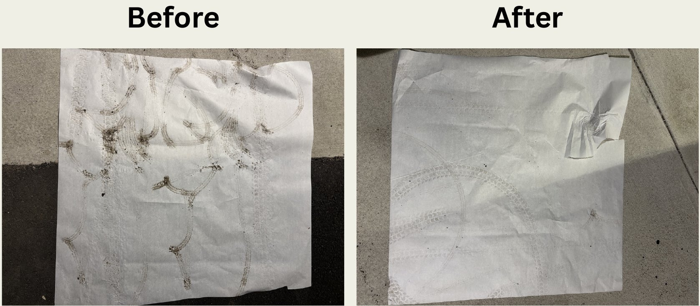

Design projects built for real clients and users, with an emphasis on accessibility.
Spring 2026
Assistive design, client project
Wheelchair tire cleaning station
Team of four, designed for a client who uses a powered wheelchair
A drive-on platform that allows the client to clean his wheelchair tires at his entryway without hand use or caregiver assistance. The team adapted a heavy-duty motorcycle wheel stand, integrated replaceable coarse-bristle brush modules, and designed a custom one-way roller consisting of a lathe-turned aluminum shaft, a machined keyway, and a press-fit one-way bearing. The base was waterjet-cut from aluminum, and the complete device weighs under 10 lb.
In testing with mud, the station cleaned the tires in approximately two minutes.
Brush module and custom one-way roller.

Tire tracks before and after cleaning.
Fall 2025
Senior capstone
Secure after-hours donation system
Team of three, for Goodwill Industries of Greater Michigan
Donations left outside Goodwill locations after hours are exposed to theft, weather, and breakage. The team developed a two-door interlock system in which an interior, stepper-driven door opens only after the donor-facing door is closed, and a level conveyor transfers items into a locked enclosure without a vertical drop. A PIR sensor, limit switches, and ultrasonic sensors disable the interior door whenever a person is present. Finite element analysis was used to evaluate the three-point locking configuration under prying loads.
During a two-hour public demonstration, the system completed repeated donation cycles without jamming, and at least 90% of approximately 30 participants completed a donation using only the posted instructions.
Final prototype with level conveyor.
Spring 2026
CAD
Three-finger adaptive gripper in SOLIDWORKS
Final project, ES19 Computer Aided Product Design, Tufts University
Modeled each component of a three-finger adaptive gripper, assembled the full mechanism, produced engineering drawings, and created a motion study demonstrating how the finger linkages open, close, and conform to objects.
Current
In progress
Robot fish
A small swimming robot based on an OpenGuppy-style sealed body, with externally adjustable ballast for tuning trim and roll stability.
Earlier undergraduate course projects are archived on my previous site.